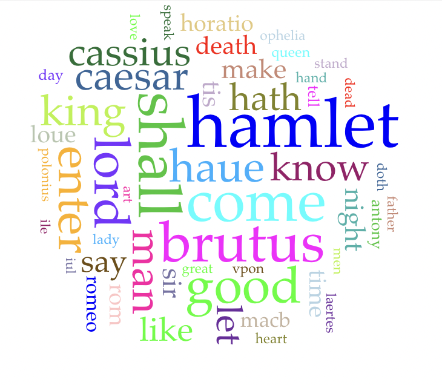
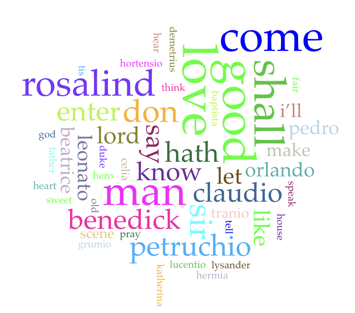
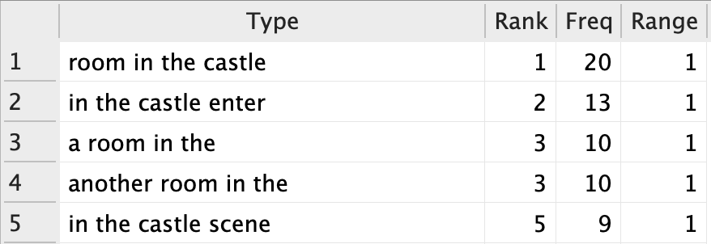
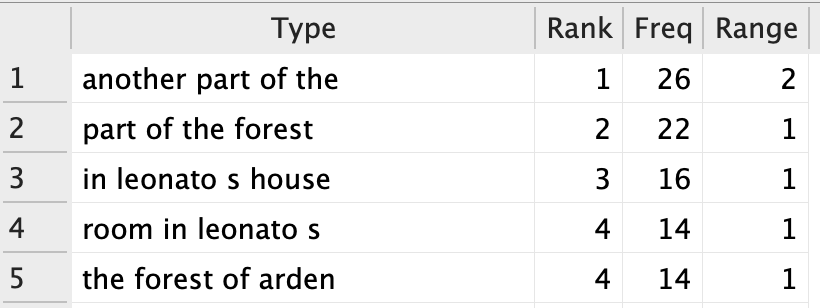

forest
In this page I will be analyzing two different sets of texts. I am doing this in order to compare and contrast Shakespeare's tragedies and his comedies. The tragedies I am using are Hamlet, Julius Caesar, Macbeth, and Romeo and Juliet. The comedies I am using are A Midsummer Night's Dream, As You Like It, Much Ado About Nothing, and The Taming of the Shrew.
First, let's look at what information Voyant Tools has to offer.


It appears that in the tragedies, the plays' respective characters' names are mentioned far more often than that of the comedies.
Now, let's take a look at AntConc. Some obvious findings are that the use of the word death
is used far more frequently in tragedies, (tragedy: 159, comedy: 44) and that the word love
is used far more in comedies. (tragedy: 102, comedy: 395)
However, I did find something rather interesting.


In the tragedies, these phrases have to do with being indoors, mainly castles. In the comedies, these phrases have to do with being outdoors. (Please note that another part of the
was always followed by either forest
or wood.
This indicates a lot abou the difference of the general settings of the comedies and tragedies. The tragedies have a lot to do with royalty/rulers, so many scenes take place within castles. The comedies (mainly A Midsummer Night's Dream and As You Like It) generally have many scenes in a forest or wooded area.
forest
I also found that there are many scene names in As You Like It that are Another Part of the Forest
that contribute to this high frequency of this word. It's very interesting to see the difference in setting of the different genres of plays without even reading them. (I have read and/or watched the tragedies, but not the comedies.)
Let's go back to the frequently used phrases with n-gram counts of 5 in Shakespeare's comedies.
There also seems to be a frequnet mentioning of houses. I looked at the context, and it appears that these phrases are also part of scene names. (Specifically Much Ado About Nothing)

A Room in Leonato'sn-gram
The use of the word house
is only slightly more frequent in the comedies than in the tragedies. (comedies: 102, tragedies: 61) One can conclude that this higher frequency can be attributed to the fact that so many scenes are named after Leonato's house. The fact that the frequency is not much higher than the tragedies can be attributed to the fact that so many of the scenes in the tragedies take place indoors.